00เกียรติยศในจักรวาล 40K
ในจักรวรรดิ เหรียญและเครื่องหมายไม่ได้มีไว้แค่ประดับ แต่บอกยศ หน้าที่ ความสำเร็จ และบางครั้งก็บอกว่าผู้ถือผ่านอะไรมา เช่น Medallion Crimson ที่ส่วนใหญ่ได้รับหลังเสียชีวิต ฝ่ายอื่นมี 'เกียรติ' ในแบบของตัวเอง เช่นเครื่องหมายของเทพ Chaos หรือหินวิญญาณของ Aeldari
แหล่งทางการแทบไม่ระบุตัวเลขว่ามีผู้ได้รับเหรียญแต่ละแบบกี่คนทั้งจักรวาล เว็บนี้จึงบอกเป็น 'ความหายาก' และระบุตัวเลขเฉพาะที่มีแหล่งอ้างอิง
01เกียรติยศของ Space Marines
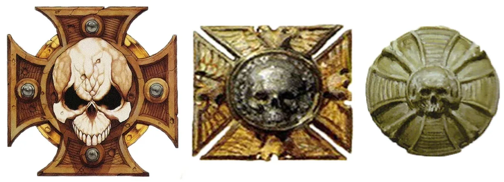
Crux Terminatus (ครักซ์ เทอร์มิเนตัส)
ได้มาอย่างไร: มอบให้ทหารผ่านศึกที่พิสูจน์ฝีมือจนได้เข้ากองร้อยที่ 1 และสวมชุด Terminator — ในหลาย Chapter Chapter Master มอบให้ด้วยตัวเอง
ความหมาย: สลักจากหิน และเชื่อกันว่าภายในมีเศษชิ้นเล็กจิ๋วของชุดเกราะที่จักรพรรดิสวมตอนดวลกับ Horus
ผู้ครอบครอง: เฉพาะทหารผ่านศึกกองร้อยที่ 1 (ไม่เกินราว 100 คนต่อ Chapter)
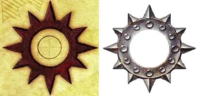
Iron Halo (ไอรอน เฮโล)
ได้มาอย่างไร: มอบให้ผู้แสดงความคิดริเริ่มและความกล้าหาญเหนือธรรมดาในฐานะผู้นำ
ความหมาย: เป็นทั้งเหรียญและอุปกรณ์สร้างสนามพลังป้องกันรอบศีรษะ มักติดบนเป้หลังของกัปตันและ Chapter Master
ผู้ครอบครอง: หายาก — ส่วนใหญ่เป็นกัปตันขึ้นไป
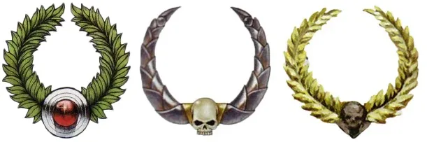
Imperial Laurel (อิมพีเรียล ลอเรล)
ได้มาอย่างไร: มอบให้ผู้ที่ความกล้าหาญนำไปสู่ชัยชนะครั้งใหญ่ของจักรวรรดิ
ความหมาย: มงกุฎใบไม้แห่งชัยชนะ — Codex Astartes กำหนดว่าผู้ถือธงของกองร้อยหรือ Chapter ต้องได้รับเกียรตินี้
ผู้ครอบครอง: น้อย
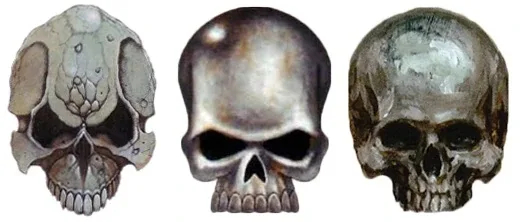
Iron Skull (ไอรอน สกัลล์)
ได้มาอย่างไร: มอบให้ผู้นำที่โดดเด่นในสนามรบ
ความหมาย: เป็นเครื่องหมายบังคับของยศ Sergeant ตาม Codex Astartes
ผู้ครอบครอง: 1 ต่อหมู่
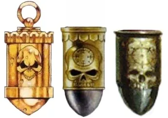
Marksman's Honour (มาร์กสแมนส์ ออนเนอร์)
ได้มาอย่างไร: มอบให้ผู้ยิงแม่นยำเป็นพิเศษ
ความหมาย: เชื่อกันว่าทำจากปลอกกระสุนทองที่ยิงจากปืน Bolter ของ Roboute Guilliman
ผู้ครอบครอง: ไม่จำกัด
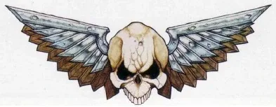
Imperialis (Winged Skull) (อิมพีเรียลิส)
ได้มาอย่างไร: มอบให้ผู้ร่วมรบในชัยชนะอันทรงเกียรติของ Chapter
ความหมาย: เดิมเป็นเครื่องหมายของ Legion ผู้ภักดีในยุค Heresy ปีกคือ Aquila ส่วนกะโหลกคือการเสียสละของจักรพรรดิ มักสลักแทนนกอินทรีบนอกเกราะ
ผู้ครอบครอง: ทั่วไปสำหรับทหารผ่านศึก
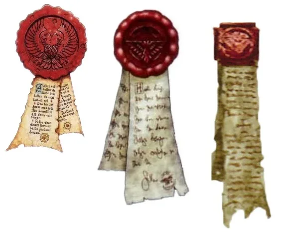
Purity Seal (เพียวริตี ซีล)
ได้มาอย่างไร: Chaplain ประทับให้ก่อนออกรบ
ความหมาย: ไม่ใช่เหรียญแต่เป็นพร — กระดาษจารึกคำอธิษฐานที่ผนึกด้วยขี้ผึ้งบนเกราะ
ผู้ครอบครอง: ทั่วไป
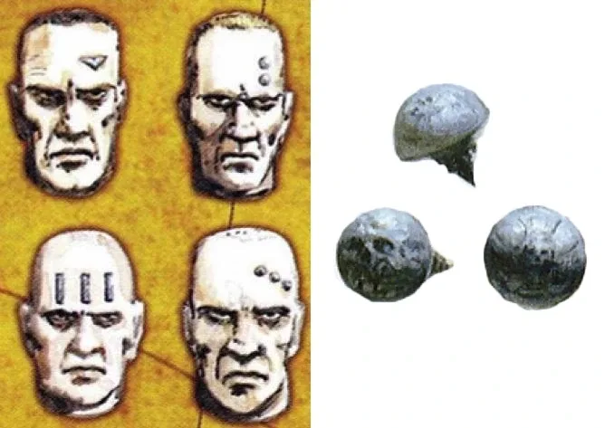
Service Studs (ตะปูบนศีรษะ) (เซอร์วิส สตัดส์)
ได้มาอย่างไร: ตอกหมุดโลหะเข้าที่กะโหลกตามอายุการรับใช้
ความหมาย: หนึ่งเม็ดแทนการรับใช้ 10, 50 หรือ 100 ปี แล้วแต่แบบและธรรมเนียมของ Chapter — Codex Astartes กล่าวถึงแต่ไม่บังคับ และหลาย Chapter เลิกใช้แล้ว
ผู้ครอบครอง: ขึ้นกับอายุการรับใช้
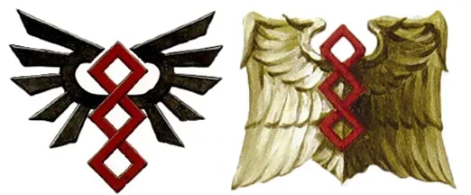
Prime Helix (ไพรม์ ฮีลิกซ์)
ได้มาอย่างไร: เครื่องหมายของ Apothecary (แพทย์)
ความหมาย: เกลียว DNA สีแดง สื่อถึง gene-seed และการเสียสละเพื่ออนาคตของ Chapter
ผู้ครอบครอง: เฉพาะ Apothecary
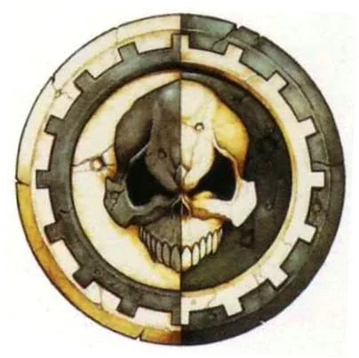
Machina Opus (แมชินา โอปัส)
ได้มาอย่างไร: มอบให้ Techmarine ที่จบการฝึกบนดาวอังคาร
ความหมาย: ผู้ถือผ่านเข้าโรงงานศักดิ์สิทธิ์ของดาวอังคารได้อย่างอิสระ
ผู้ครอบครอง: เฉพาะ Techmarine
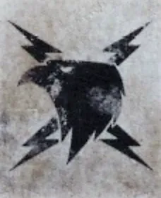
Raptor Imperialis (แร็ปเตอร์ อิมพีเรียลิส)
ได้มาอย่างไร: สัญลักษณ์สายฟ้าของจักรพรรดิในยุค Unification Wars
ความหมาย: ในยุค Great Crusade ใช้บ่งบอกทหารผ่านศึกชาว Terra ที่เคยรบเคียงข้างจักรพรรดิ
ผู้ครอบครอง: 30K เท่านั้น
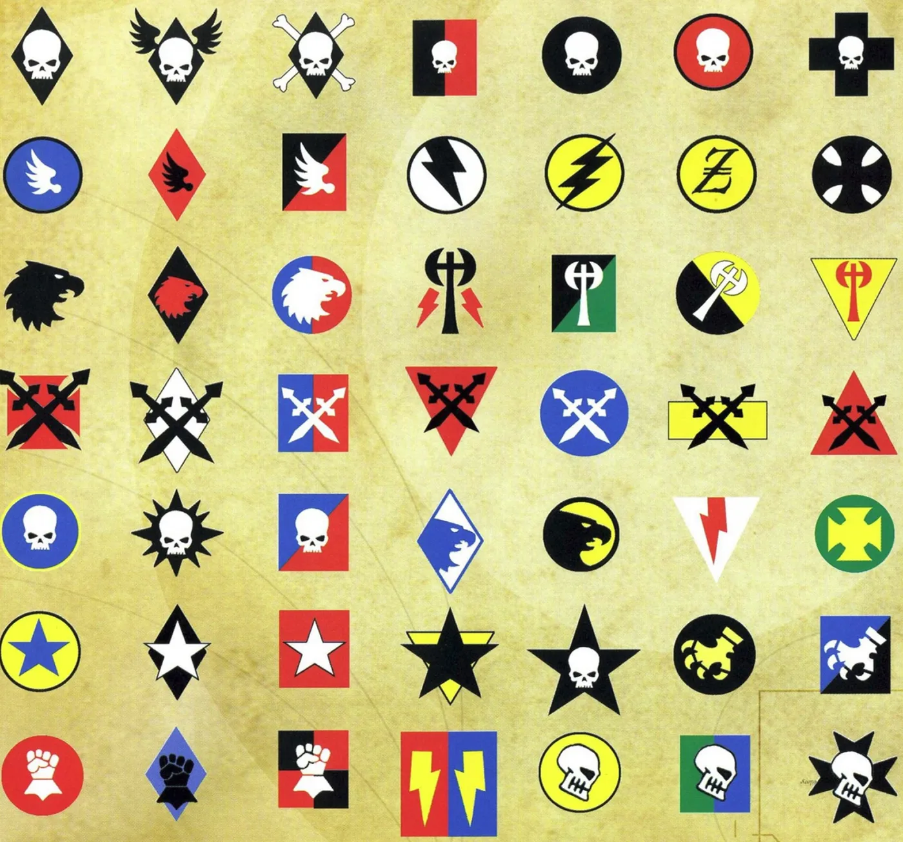
Army Badge (อาร์มี แบดจ์)
ได้มาอย่างไร: ผู้บัญชาการเลือกสัญลักษณ์ประจำการรบแต่ละครั้ง ทาไว้ที่แข้งขวาของเกราะ
ความหมาย: ถ้าหน่วยทำผลงานโดดเด่น เครื่องหมายนี้จะกลายเป็นเกียรติถาวรบนธงและเกราะ
ผู้ครอบครอง: ทุกคนในการรบนั้น
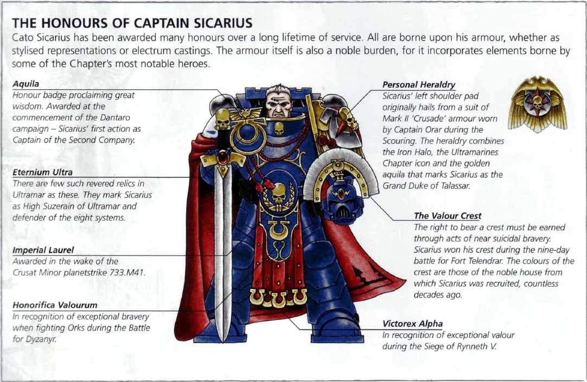
02เหรียญของ Astra Militarum
แบ่งเป็นเหรียญที่ใช้ทั่วจักรวรรดิ เหรียญประจำการรบ และเหรียญประจำกรมทหาร (ตัวอย่างด้านล่างที่ระบุ Cadia มาจากสงคราม Medusa V)
Order of Ollanius Pius (ออร์เดอร์ ออฟ โอลลาเนียส ไพอัส)
ได้มาอย่างไร: มอบโดย High Lords of Terra เท่านั้น สำหรับความเป็นผู้นำและความกล้าหาญที่เหนือหน้าที่
ความหมาย: เกียรติสูงสุดที่มนุษย์ธรรมดาจะได้รับ เป็นรูปใบหน้าของนักบุญ Ollanius Pius ผู้เสียสละชีวิตปกป้องจักรพรรดิใน Siege of Terra และจารึกข้อความที่พาดพิงถึงปีศาจ ซึ่งเป็นความลับที่คนทั่วไปไม่รู้
ผู้ครอบครอง: น้อยมาก ไม่มีตัวเลขทางการ
Star of Terra (สตาร์ ออฟ เทอร์รา)
ได้มาอย่างไร: มอบโดย High Lords of Terra สำหรับความกล้าหาญที่เสี่ยงชีวิตเกินหน้าที่
ความหมาย: เหรียญสูงสุดที่ทหารจะได้รับขณะยังมีชีวิต — Sly Marbo ได้รับหลายครั้ง
ผู้ครอบครอง: น้อยมาก
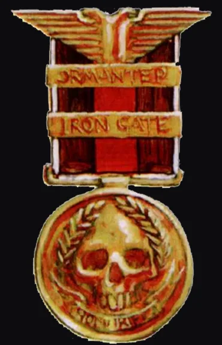
Honourifica Imperialis (ออนเนอริฟิกา อิมพีเรียลิส)
ได้มาอย่างไร: เหรียญความกล้าหาญที่มอบในแต่ละ Segmentum
ความหมาย: ผู้ถือคือวีรบุรุษตัวจริงที่เพื่อนและผู้บังคับบัญชาเคารพ
ผู้ครอบครอง: น้อย
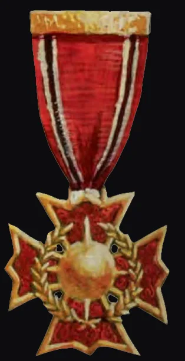
Macharian Cross (มาคาเรียน ครอส)
ได้มาอย่างไร: มอบให้นายทหารที่ใช้ยุทธวิธีได้ชาญฉลาด
ความหมาย: ความกล้าอย่างเดียวไม่พอ ผู้ได้รับมักถูกดึงเข้ากองเสนาธิการ
ผู้ครอบครอง: น้อย
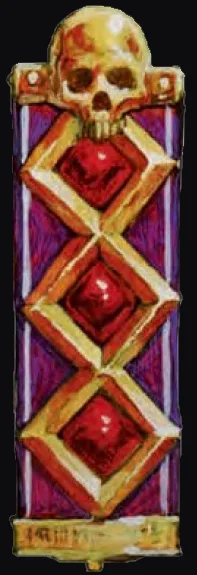
Medallion Crimson (เมดัลเลียน คริมสัน)
ได้มาอย่างไร: มอบให้ผู้ที่ยังทำหน้าที่ต่อทั้งที่บาดเจ็บสาหัส
ความหมาย: ผู้ได้รับมักมีอวัยวะกลแทนส่วนที่เสียไป และส่วนใหญ่ได้รับหลังเสียชีวิต
ผู้ครอบครอง: ปานกลาง
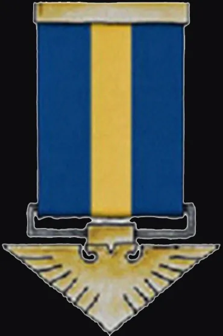
Eagle Ordinary (อีเกิล ออร์ดินารี)
ได้มาอย่างไร: มอบให้ความกล้าหาญที่มากกว่าหน้าที่ (แต่ไม่ถึงขั้นพิเศษ)
ความหมาย: ทหารล้อเลียนกันว่าเป็น 'วีรบุรุษที่น่าเบื่อ' เพราะยังไม่ตาย
ผู้ครอบครอง: ค่อนข้างทั่วไป
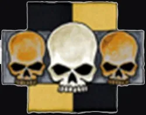
Triple Skull (ทริปเปิล สกัลล์)
ได้มาอย่างไร: มอบให้ผู้รอดชีวิตจากหน่วยที่สูญเสียอย่างน้อย 66%
ความหมาย: ถ้าตายในการรบแบบเดียวกันจะได้ Golden Skull แทน (หลังเสียชีวิต)
ผู้ครอบครอง: ขึ้นกับความสูญเสีย
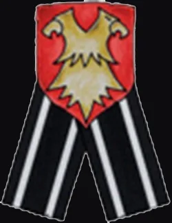
Ribbon Intrinsic (ริบบอน อินทรินสิก)
ได้มาอย่างไร: มอบให้ทั้งหมู่ที่ยืนหยัดจนพลิกความพ่ายแพ้เป็นชัยชนะ
ความหมาย: มอบเป็นหน่วย ไม่ใช่รายบุคคล มักเหลือผู้รับเพียงไม่กี่คน
ผู้ครอบครอง: น้อย
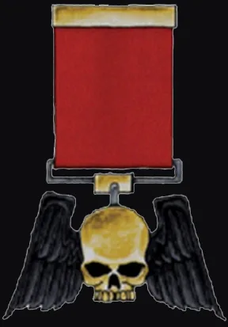
Winged Skull (วิงด์ สกัลล์)
ได้มาอย่างไร: มอบให้ความเป็นผู้นำที่สร้างแรงบันดาลใจจนได้ชัยชนะ
ความหมาย: ต้นแบบของ Iron Skull ที่ Space Marine ใช้เป็นเครื่องหมาย Sergeant
ผู้ครอบครอง: ปานกลาง
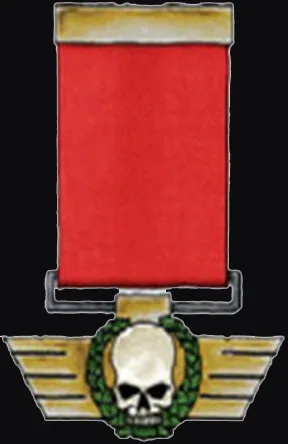
Order of the Scarlet Wing (ออร์เดอร์ ออฟ เดอะ สการ์เล็ต วิง)
ได้มาอย่างไร: มอบให้ผู้บาดเจ็บแต่รอดจากการโจมตีทางอากาศ
ความหมาย: ทหารพลร่มเรียกว่า 'ได้ปีก'
ผู้ครอบครอง: ทั่วไปในหน่วยพลร่ม
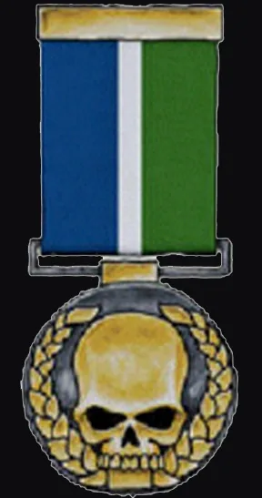
Merit of Terra (Cadia) (เมอริต ออฟ เทอร์รา)
ได้มาอย่างไร: มอบให้ทหาร Cadia ที่สมัครใจเลื่อนการปลดประจำการ
ความหมาย: หมายถึงต้องรับใช้นานกว่าที่คาด แม้แต่ Space Marine ยังนับถือ
ผู้ครอบครอง: เฉพาะ Cadia
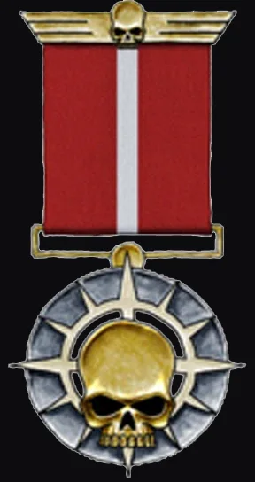
Merit of the High Lords (Cadia) (เมอริต ออฟ เดอะ ไฮ ลอร์ดส์)
ได้มาอย่างไร: มอบให้ผู้บัญชาการ Cadia ที่ชื่อถูกกล่าวถึงในที่ประชุม High Lords
ความหมาย: ฉายา 'ดาบสองคม' เพราะผู้ได้รับมักถูกส่งไปแนวรบที่โหดที่สุด
ผู้ครอบครอง: น้อยมาก
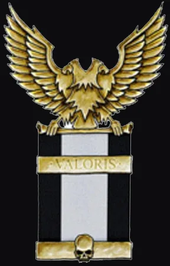
Valoris Imperator (Cadia) (วาโลริส อิมพีเรเตอร์)
ได้มาอย่างไร: ตามชื่อคือเหรียญสำหรับผู้รับใช้กรมทหาร Cadia 20 ปีขึ้นไป
ความหมาย: แต่ในความจริงมักมอบหลังเสียชีวิตให้ผู้ที่ผ่านสถานการณ์เลวร้ายเท่านั้น
ผู้ครอบครอง: น้อย
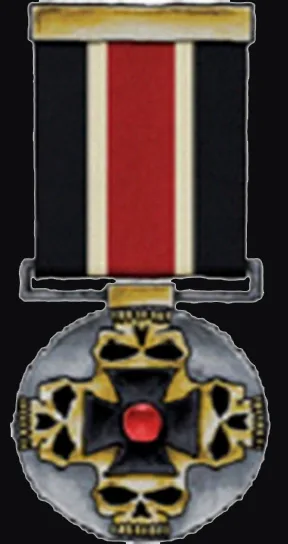
Crimson Skull (Cadia) (คริมสัน สกัลล์)
ได้มาอย่างไร: มอบให้ผู้ปฐมพยาบาลเพื่อนทหารท่ามกลางการรบ
ความหมาย: หน่วยแพทย์สนามแทบทุกคนมี
ผู้ครอบครอง: ทั่วไปในหน่วยแพทย์
03ฝ่ายอื่น: Inquisition, Chaos และ Xenos
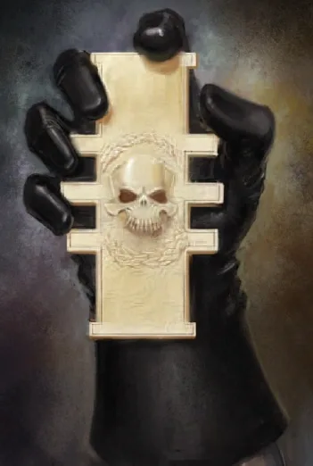
Inquisitorial Rosette (อินควิซิทอเรียล โรเซตต์)
ได้มาอย่างไร: มอบให้ Inquisitor ทุกคนเมื่อได้รับตำแหน่ง
ความหมาย: ไม่ใช่เหรียญแต่เป็นตราแห่งอำนาจสูงสุด — ผู้ถือสั่งการได้แทบทุกคนในนามจักรพรรดิ Inquisitor จะไม่ยอมห่างจากมันเลย
ผู้ครอบครอง: 1 ต่อ Inquisitor
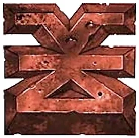
Mark of Khorne (มาร์ก ออฟ คอร์น)
ได้มาอย่างไร: ได้จากการเข่นฆ่าเพื่อเทพแห่งเลือด
ความหมาย: เครื่องหมายบนร่างกายและพลังพิเศษจากเทพ — เป็นทั้งรางวัลและสัญลักษณ์ของความภักดีต่อเทพองค์นั้น
ผู้ครอบครอง: เฉพาะผู้ที่เทพโปรดปราน
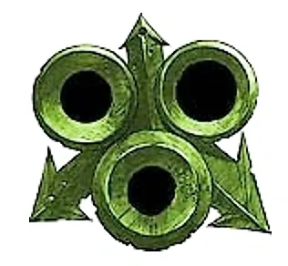
Mark of Nurgle (มาร์ก ออฟ เนอร์เกิล)
ได้มาอย่างไร: ได้จากการแพร่โรคและทนความเสื่อม
ความหมาย: ร่างกายเน่าเปื่อยแต่ทนทาน ไม่รู้สึกเจ็บ
ผู้ครอบครอง: เฉพาะผู้ที่เทพโปรดปราน
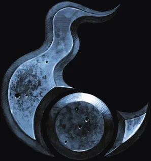
Mark of Tzeentch (มาร์ก ออฟ ซีนช์)
ได้มาอย่างไร: ได้จากการวางแผนและใฝ่หาความรู้ต้องห้าม
ความหมาย: พลังเวทมนตร์และการกลายพันธุ์ที่เปลี่ยนแปลงตลอดเวลา
ผู้ครอบครอง: เฉพาะผู้ที่เทพโปรดปราน
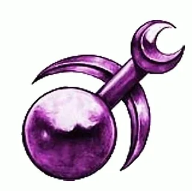
Mark of Slaanesh (มาร์ก ออฟ สลาเนช)
ได้มาอย่างไร: ได้จากการแสวงหาความสุขหรือความสมบูรณ์แบบจนเกินพอดี
ความหมาย: ความเร็ว ความงามที่บิดเบี้ยว และประสาทสัมผัสที่รุนแรงขึ้น
ผู้ครอบครอง: เฉพาะผู้ที่เทพโปรดปราน
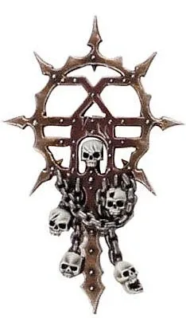
Chaos Icon (เคออส ไอคอน)
ได้มาอย่างไร: ธงหรือรูปเคารพที่นำเข้าสนามรบ
ความหมาย: ดึงพลัง Warp เข้ามาหนุนนักรบรอบข้าง เช่น Icon of Wrath ของ Khorne
ผู้ครอบครอง: 1 ต่อหน่วย

Spirit Stone (หินวิญญาณ) (สปิริต สโตน)
ได้มาอย่างไร: ชาว Aeldari ทุกคนบน Craftworld สวมไว้ที่อก (ภาพ: Troupe Master Motley ถือหินวิญญาณ)
ความหมาย: ไม่ใช่เหรียญ แต่สำคัญที่สุดในชีวิต — เก็บวิญญาณไว้ไม่ให้ Slaanesh กลืนเมื่อตาย
ผู้ครอบครอง: ทุกคน
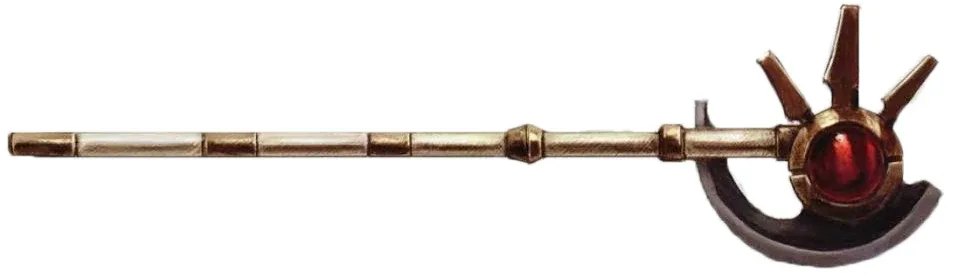
Honour Blade (ออนเนอร์ เบลด)
ได้มาอย่างไร: ง้าวประจำตัวของ Ethereal แต่ละคน
ความหมาย: เป็นสัญลักษณ์ตำแหน่ง ใช้ดวลแบบไม่นองเลือดเพื่อยุติข้อพิพาทระหว่าง Ethereal
ผู้ครอบครอง: 1 ต่อ Ethereal
- Orks — ไม่มีเหรียญ แต่ 'เกียรติ' คือขนาดตัว ของที่ปล้นได้ และถ้วยรางวัลอย่างหัวกะโหลกศัตรูที่แขวนประดับ
- Necrons — ขุนนางแสดงฐานะด้วยราชวงศ์และตำแหน่ง ไม่ใช่เหรียญ
- Tyranids — ไม่มีแนวคิดเรื่องเกียรติยศ